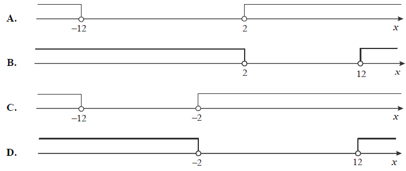
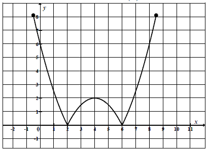
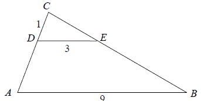
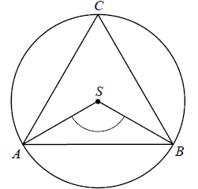

Matura 2010 maj
Wskaż rysunek, na którym jest przedstawiony zbiór rozwiązań nierówności \(|x + 7| >
5\). 
C
Spodnie po obniżce ceny o \(30\%\) kosztują \(126\) zł. Ile kosztowały spodnie
przed obniżką?
A.\(163{,}80\) zł
B.\(180\) zł
C.\(294\) zł
D.\(420\) zł
B
Liczba \(\left (\frac{2^{-2}\cdot 3^{-1}}{2^{-1}\cdot 3^{-2}} \right )^0\) jest
równa
A.\( 1 \)
B.\( 4 \)
C.\( 9 \)
D.\( 36 \)
A
Liczba \( \log_{4}8+\log_{4}2 \) jest równa
A.\(1 \)
B.\(2 \)
C.\(\log_{4}6 \)
D.\(\log_{4}10 \)
B
Dane są wielomiany \(W(x)=-2x^3+5x^2-3\) oraz \(P(x)=2x^3+12x\). Wielomian \(W(x) + P(x)\) jest równy
A.\( 5x^2+12x-3 \)
B.\( 4x^3+5x^2+12x-3 \)
C.\( 4x^6+5x^2+12x-3 \)
D.\( 4x^3+12x^2-3 \)
A
Rozwiązaniem równania \(\frac{3x-1}{7x+1}=\frac{2}{5}\) jest
A.\( 1 \)
B.\( \frac{7}{3} \)
C.\( \frac{4}{7} \)
D.\( 7 \)
D
Do zbioru rozwiązań nierówności \((x-2)(x+3)\lt 0\)
należy liczba
A.\( 9 \)
B.\( 7 \)
C.\( 4 \)
D.\( 1 \)
D
Wykresem funkcji kwadratowej \(f(x)=-3x^2+3\) jest
parabola o wierzchołku w punkcie
A.\( (3,0) \)
B.\( (0,3) \)
C.\( (-3,0) \)
D.\( (0,-3) \)
B
Prosta o równaniu \(y=-2x+(3m+3)\) przecina w układzie
współrzędnych oś \(Oy\) w punkcie \((0,2)\). Wtedy
A.\( m=-\frac{2}{3} \)
B.\( m=-\frac{1}{3} \)
C.\( m=\frac{1}{3} \)
D.\( m=\frac{5}{3} \)
B
Na rysunku przedstawiony jest wykres funkcji \(y=f(x)\).  Które równanie ma dokładnie trzy
rozwiązania?
A.\( f(x)=0 \)
B.\( f(x)=1 \)
C.\( f(x)=2 \)
D.\( f(x)=3 \)
C
W ciągu arytmetycznym \((a_n)\) dane są: \(a_3=13\) i
\(a_5=39\). Wtedy wyraz \(a_1\) jest równy
A.\( 13 \)
B.\( 0 \)
C.\( -13 \)
D.\( -26 \)
C
W ciągu geometrycznym \((a_n)\) dane są: \(a_1 = 3\) i
\(a_4 = 24\). Iloraz tego ciągu jest równy
A.\( 8 \)
B.\( 2 \)
C.\( \frac{1}{8} \)
D.\( -\frac{1}{2} \)
B
Liczba przekątnych siedmiokąta foremnego jest równa
A.\( 7 \)
B.\( 14 \)
C.\( 21 \)
D.\( 28 \)
B
Kąt \(\alpha \) jest ostry i \(\sin \alpha =\frac{3}{4}\). Wartość wyrażenia \(2-\cos ^2\alpha \) jest równa
A.\( \frac{25}{16} \)
B.\( \frac{3}{2} \)
C.\( \frac{17}{16} \)
D.\( \frac{31}{16} \)
A
Okrąg opisany na kwadracie ma promień \(4\). Długość boku tego kwadratu jest równa
A.\( 4\sqrt{2} \)
B.\( 2\sqrt{2} \)
C.\( 8 \)
D.\( 4 \)
A
Podstawa trójkąta równoramiennego ma długość \(6\), a ramię ma długość \(5\).
Wysokość opuszczona na podstawę ma długość
A.\( 3 \)
B.\( 4 \)
C.\( \sqrt{34} \)
D.\( \sqrt{61} \)
B
Odcinki \(AB\) i \(DE\) są równoległe. Długości odcinków \(CD, DE\) i \(AB\) są
odpowiednio równe \(1\), \(3\) i \(9\). Długość odcinka \(AD\) jest równa 
A.\( 2 \)
B.\( 3 \)
C.\( 5 \)
D.\( 6 \)
A
Punkty \(A, B, C\) leżące na okręgu o środku \(S\) są wierzchołkami trójkąta
równobocznego.  Miara zaznaczonego
na rysunku kąta środkowego \(ASB\) jest równa
A.\( 120^\circ \)
B.\( 90^\circ \)
C.\( 60^\circ \)
D.\( 30^\circ \)
A
Latawiec ma wymiary podane na rysunku.  Powierzchnia zacieniowanego trójkąta jest równa
Powierzchnia zacieniowanego trójkąta jest równa
Powierzchnia zacieniowanego trójkąta jest równa A.\( 3200 \) cm2
B.\( 6400 \) cm2
C.\( 1600 \) cm2
D.\( 800 \) cm2
C
Współczynnik kierunkowy prostej równoległej do prostej o równaniu \(y = -3x + 5\)
jest równy
A.\( -\frac{1}{3} \)
B.\( -3 \)
C.\( \frac{1}{3} \)
D.\( 3 \)
B
Wskaż równanie okręgu o promieniu \(6\).
A.\( x^2+y^2=3 \)
B.\( x^2+y^2=6 \)
C.\( x^2+y^2=12 \)
D.\( x^2+y^2=36 \)
D
Punkty \(A=(-5,2)\) i \(B=(3,-2)\) są wierzchołkami trójkąta równobocznego \(ABC\).
Obwód tego trójkąta jest równy
A.\( 30 \)
B.\( 4\sqrt{5} \)
C.\( 12\sqrt{5} \)
D.\( 36 \)
C
Pole powierzchni całkowitej prostopadłościanu o wymiarach \(5\times 3\times 4\) jest równe
A.\( 94 \)
B.\( 60 \)
C.\( 47 \)
D.\( 20 \)
A
Ostrosłup ma \(18\) wierzchołków. Liczba wszystkich krawędzi tego ostrosłupa jest
równa
A.\( 11 \)
B.\( 18 \)
C.\( 27 \)
D.\( 34 \)
D
Średnia arytmetyczna dziesięciu liczb \(x, 3, 1, 4, 1, 5, 1, 4,
1, 5\) jest równa \(3\). Wtedy
A.\( x=2 \)
B.\( x=3 \)
C.\( x=4 \)
D.\( x=5 \)
D
Rozwiąż nierówność \(x^2 - x - 2 \le 0\).
\(x\in \langle -1; 2\rangle \)
Rozwiąż równanie \(x^3 - 7x^2 - 4x + 28 = 0\).
\(x=-2\) lub \(x=2\) lub \(x=7\)
Trójkąty prostokątne równoramienne \(ABC\) i \(CDE\) są położone tak, jak na
poniższym rysunku (w obu trójkątach kąt przy wierzchołku C jest prosty). Wykaż, że \(AD = BE\). 
Kąt \(\alpha \) jest ostry i \(\operatorname{tg} \alpha =\frac{5}{12}\). Oblicz
\(\cos \alpha \).
\(\cos \alpha =\frac{12}{13}\)
Wykaż, że jeśli \(a>0\), to \(\frac{a^2+1}{a+1}\ge
\frac{a+1}{2}\).
W trapezie prostokątnym krótsza przekątna dzieli go na trójkąt prostokątny i
trójkąt równoboczny. Dłuższa podstawa trapezu jest równa \(6\). Oblicz obwód tego trapezu.
\(Obw = 15+3\sqrt{3}\)
Podstawą ostrosłupa \(ABCD\) jest trójkąt \(ABC\). Krawędź \(AD\) jest wysokością
ostrosłupa (zobacz rysunek).  Oblicz
objętość ostrosłupa \(ABCD\), jeśli wiadomo, że \(AD = 12\), \(BC = 6\), \(BD = CD = 13\).
Oblicz
objętość ostrosłupa \(ABCD\), jeśli wiadomo, że \(AD = 12\), \(BC = 6\), \(BD = CD = 13\).
Oblicz
objętość ostrosłupa \(ABCD\), jeśli wiadomo, że \(AD = 12\), \(BC = 6\), \(BD = CD = 13\).\(V=48\)
Doświadczenie losowe polega na dwukrotnym rzucie symetryczną sześcienną kostką do
gry. Oblicz prawdopodobieństwo zdarzenia \(A\) polegającego na tym, że w pierwszym rzucie otrzymamy
parzystą liczbę oczek i iloczyn liczb oczek w obu rzutach będzie podzielny przez \(12\). Wynik
przedstaw w postaci ułamka zwykłego nieskracalnego.
\(P(A)=\frac{1}{6}\)
W dwóch hotelach wybudowano prostokątne baseny. Basen w pierwszym hotelu ma
powierzchnię \(240\) m2. Basen w drugim hotelu ma powierzchnię \(350\) m2
oraz jest o \(5\) m dłuższy i \(2\) m szerszy niż w pierwszym hotelu. Oblicz, jakie wymiary
mogą mieć baseny w obu hotelach. Podaj wszystkie możliwe odpowiedzi.
\(8\times 30\) i \(10\times 35\) lub \(12\times 20\) i \(14\times 25\)